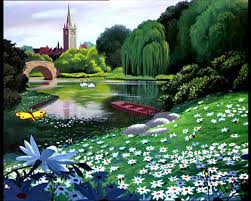

The Garden Symbol
The garden in Alice Adventures in Wonderland represents the Garden of Eden from the bible, a place of beauty and innnocence, that alice in not allowed to enter. It could also be a personification or a manifestation of alice's desires, and how she wants to obtain her dreams.
